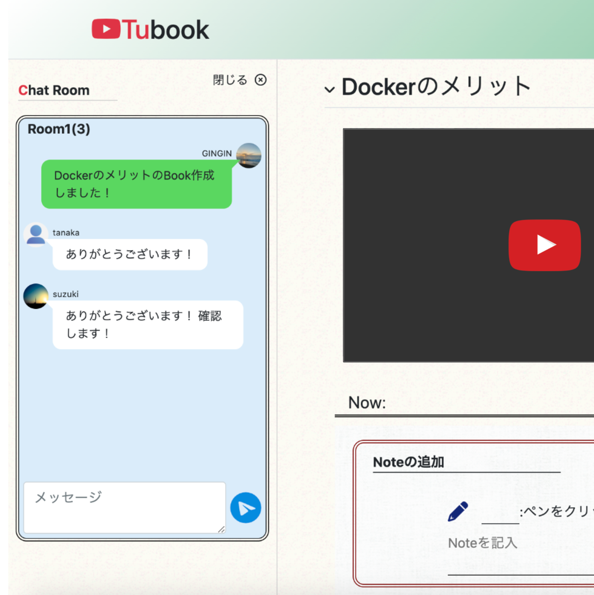
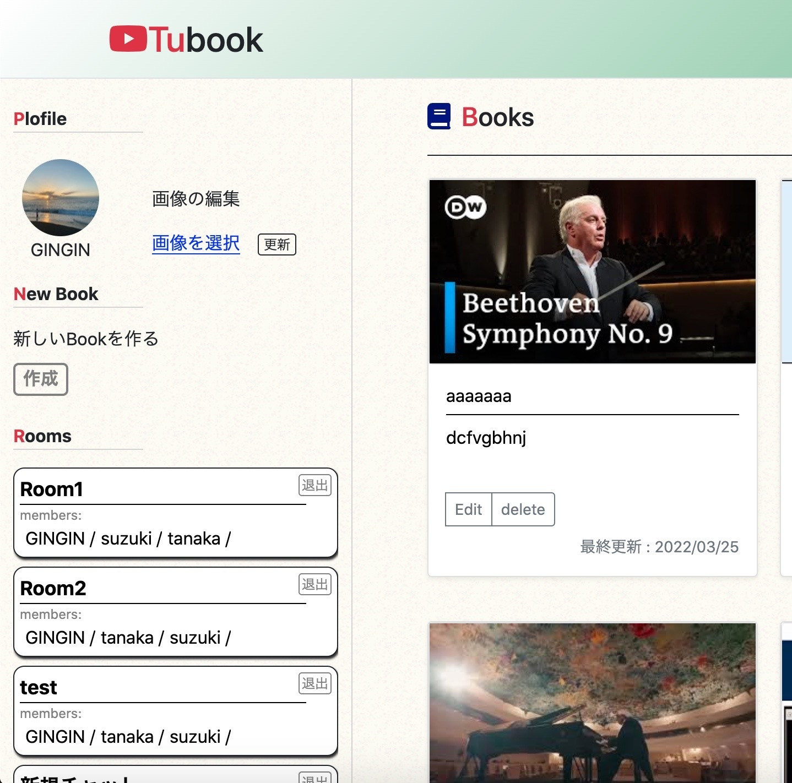

Tubook（youtubeメモアプリ）

開発環境
Ruby / Ruby on Rails / JavaScript / Nginx / AWS / MYSQL/ GitHub / Visual Studio Code
-
概要
制作時間 120時間 URL http://52.198.247.103/ ID admin PASS 2222 -
動作テスト
ゲストアカウント1
mail g1@sample.com PASS aaa222 ゲストアカウント2
mail g2@sample.com PASS aaa222 Room招待可能アカウント
アカウント名 GINGIN・tanaka・suzuki
OUTLINEアプリケーションの概要
youtube動画での学習を支援するアプリケーションです。
・好みのyoutube動画にタイトルを付けて管理することができ、参考書に付箋を貼るような感覚で指定した
時間にメモを書き込めます。
・メモをクリックすると、メモのある時間に動画をジャンプさせることができるので、いつでも・簡単に・
素早く知りたい情報にたどり着くことができます。
・書き込んだメモは動画の再生に合わせて表示されます。
これらの機能により作成されるコンテンツを、アプリ内では本になぞらえBookと呼びます。
その他に、任意のメンバーを招待できるRoom機能では作成したBookを共有することができ、また、リアルタイムチャットを使ってアプリケーション内で簡単にコミュニケーションを取ることができます。
これらの機能は、学習のみならず、動画制作における制作物の確認や修正点の共有といった用途にも利用できます。
-
開発に至った経緯
私の身近な友人や同僚にヒアリングを行ったところ、「近頃は動画で学習を行うことが多いが、復習をするときに必要な情報を素早く取り出すことができない」というケースに遭遇しました。
これには私自身も見に覚えがあり、ちょうど動画を扱ってみたいとも考えていたので「動画を扱いやすくする」というテーマに取り組もうと考えました。
さらにヒアリングを続けたところ、仕事の一環で動画制作を行うという知人から、「作成した動画の修正箇所等の伝達・コミュニケーションがスムーズにいかない」という問題を知りました。
そこで、１．動画の必要な情報を、引き出しやすい状態でまとめておく
２．これをチームで共有し、コミュニケーションを取りやすくする以上の2点の要件を満たすアプリを開発することにしました。
-
開発で工夫したこと
・企画
身近な人物にヒアリングを行い、自身の想像ではなく、実在する問題解決のためのアプリケーションを開発しました。・youtube動画の操作
非同期通信で追加する要素自身に動画を操作するトリガーやデータを持たせ、また、新たに追加された要素の情報を他の関数内(Note自動表示昨日等)においても追加・更新するなど、JavaScriptの使い方を工夫しました。・リアルタイムチャット機能
ActionCableを利用したリアルタイムチャット昨日を実装しました。また、受信したメッセージを自身の投稿とそれ以外で左右に振り分けるなどの工夫も行いました。・実践的なサーバーの構築
より実践的なサーバー構築を学ぶため、Multi-AZでのAWSのサーバー構築を行いました(EC2/RDS(mysql))。料金の問題から、現在はSingle-AZ(MariaDB on EC2)の構成に変更してあります。 -
今後実装したいと思っていること
・レスポンシブ化
現在、webページの閲覧はスマートフォンの利用が主流のため、レスポンシブに対応し、より多くのユーザーが使いやすいデザインにする。・投稿したBookを、ラベルで管理できるようにする。
Book同士の関連付けすることで、利用者の学習効率を上げるため。・Book検索機能の実装
現状ではBookの投稿数が多くなった場合に、目的のBookを見つけづらいため。・Room内の変更に対するお知らせ機能の実装。
新規Bookの投稿や、チャットメッセージを受信した際にすぐに気付けるようにするため